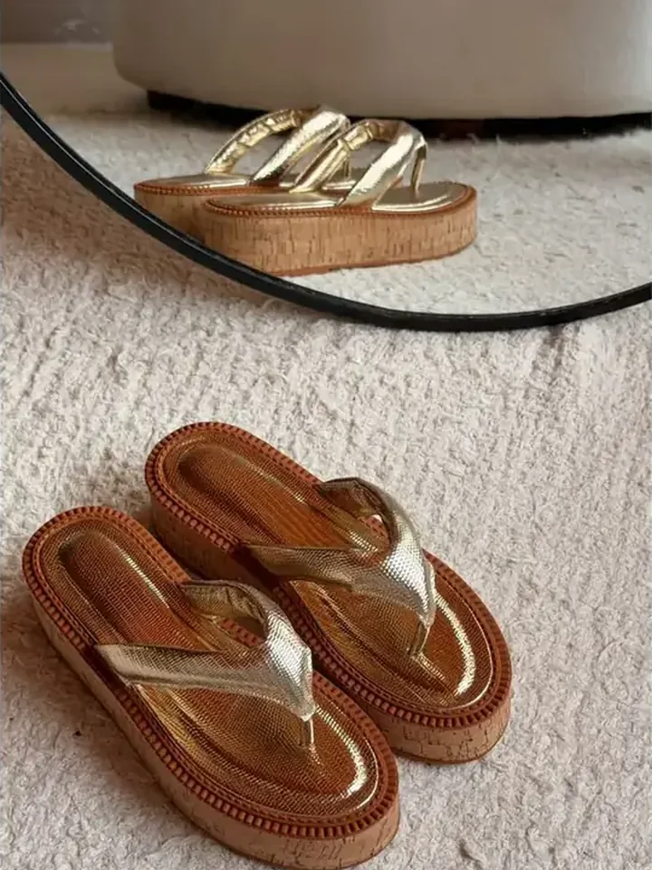
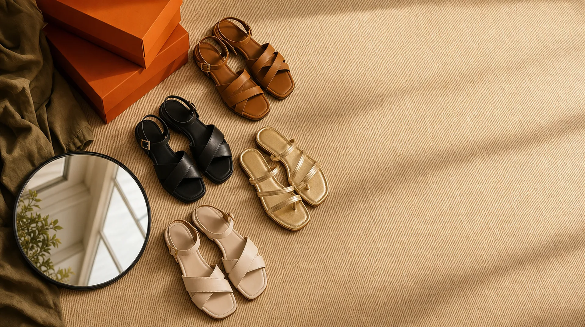

Venha conhecer a loja em Goiânia.
Rua José Pedro Costa, Qd. 33A, Lt. 6, Setor Centro Oeste. De segunda a sexta, das 8h às 18h, e aos sábados até meio-dia. Compre no site e retire na loja em 2 horas.


A Aluzza nasceu de uma ideia simples: um sapato bonito não precisa machucar. Desde 2011, desenhamos e produzimos cada modelo aqui, em pequenas quantidades, para a rotina real das mulheres.
Começamos pequenos, vendendo para lojistas da região e ouvindo, par a par, o que incomodava: a palmilha que esquenta, a tira que aperta, o salto que balança. Cada reclamação virou um ajuste de forma. Hoje, essa escuta é o nosso método.
Temos fabricação própria e modelagem exclusiva. Na prática, isso quer dizer que a forma de um scarpin Aluzza foi desenhada para o pé brasileiro e testada por quem fica dez horas em pé. E que, quando um modelo faz sucesso, conseguimos repor rápido e lançar novas cores sem esperar meses.
Cada coleção passa por três etapas antes de chegar ao site: o desenho, a prova no pé e o ajuste. Só depois a produção começa, em lotes pequenos. É por isso que você vê novidades toda semana e, às vezes, um modelo esgota em dias.
Os materiais são escolhidos pelo toque e pela durabilidade: napas e vernizes sintéticos de alta qualidade, tecidos em tela para os modelos de verão e solados leves com forração macia. Tudo com acabamento feito à mão.
Beleza e conforto não são opostos. Se um modelo não passa no teste do dia inteiro, ele não vai para o site.
Preferimos o modelo que você vai usar cem vezes ao que vai usar uma. Por isso nossas cores clássicas nunca saem de linha.
Atendimento humano no WhatsApp, troca sem burocracia e uma comunidade que nos ajuda a decidir a próxima cor.
Rua José Pedro Costa, Qd. 33A, Lt. 6, Setor Centro Oeste. De segunda a sexta, das 8h às 18h, e aos sábados até meio-dia. Compre no site e retire na loja em 2 horas.
